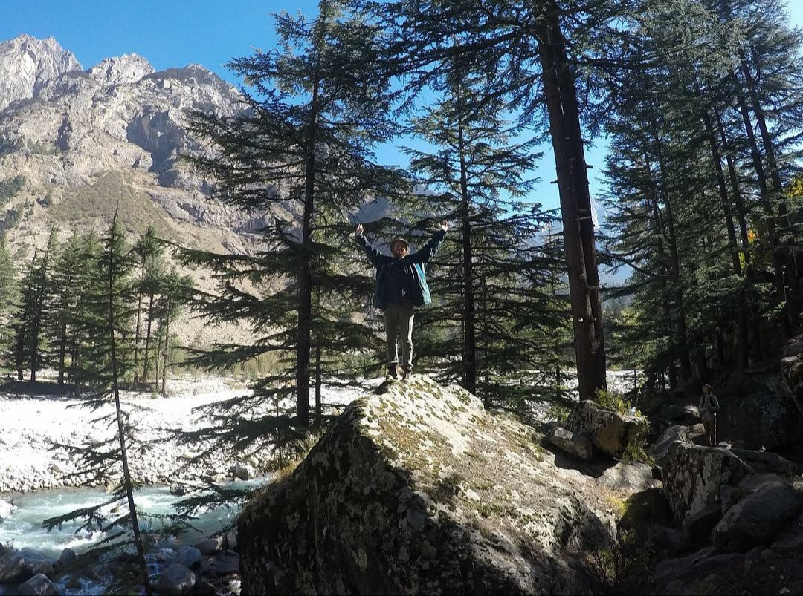
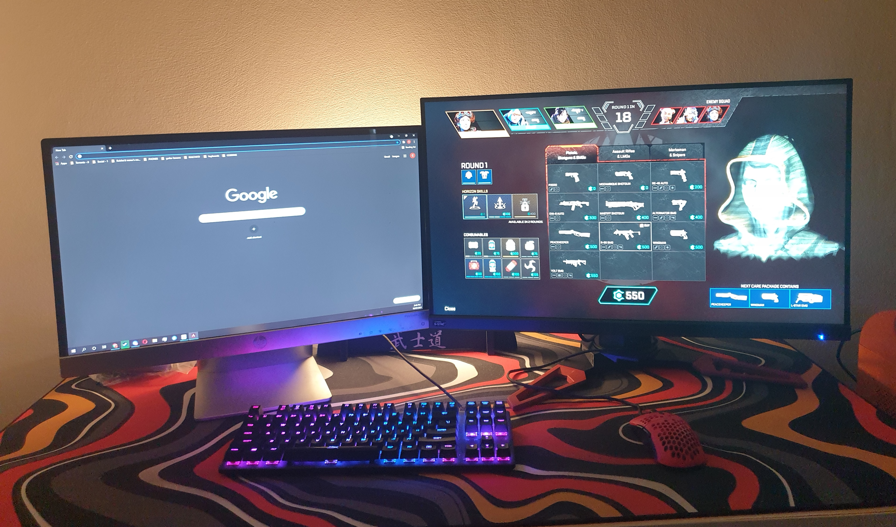

Travelling

“Travelling is something I want to pursue in the future and have already had some great experiences with. I’ve been to New Zealand, Bali, Hong Kong, India (3 times mostly for work) and Indonesia. Recently travelling and working for myself simultaneously has been something I extremely enjoy and hope I can continue to do so in the near future.”
Computer Games

“A lot of my spare time, probably too much of my spare time has been dedicated to first person shooter video games. In high school I went pro in a game called “Urban Terror 4.1” and played for the Australian team in one of the World Tournaments. No we didn’t win, France did. But since then I’ve mostly just played competitive ranked games”